- Owner of the lock
- Weather Element name
- Lock timerange
Select the locks you wish to break and click Breaklock(s) or click Cancel at any time to cancel the operation and close the dialog. Note that breaking a lock is irreversible. The "Select All Orphans" button highlights all of the orphaned entries and the "Clear All" button de-selects the entries. For verification purposes, the "Select All Orphans" button does not highlight locks owned by active clients; these must be individually selected.
The Define Config Dialog lists all existing configuration files.
Selecting a foler and doing right-click-->New allows you to modify configuration files that affect the behavior of the GFE and IFPImage. A dialog will appear for you to enter the name of the configuration file. After clicking Ok, the Python editor will appear for you add or modify the configuration attrubites.
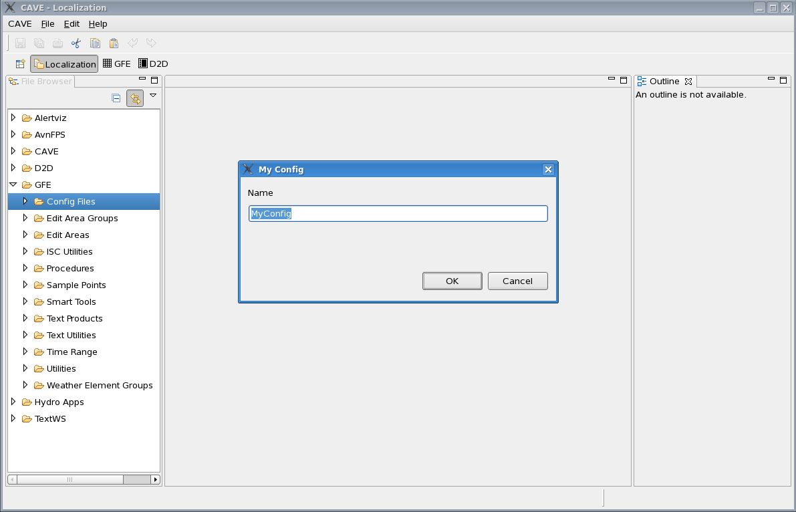
Auto Save Interval Dialog
The Auto Save Interval Dialog allows the user to enable or disable the automatic save feature of the GFE. If disabled, no weather elements will be automatically saved. If enabled, the user may choose an interval from one minute to sixty minutes. At this regular interval, the GFE checks for modified weather elements. If there are any, then one weather element at a time is saved with a short interval between them. During the auto save process, you will notice that the cursor shape will change to the "wait" cursor, and the "green" lock indications on the Grid Manager will disappear indicating that those grids have been saved to the database.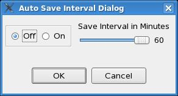
Interpolation Algorithm Dialog
The interpolation algorithm dialog allows the user to select one of four interpolation algorithms to use for scalar interpolation. The interpolation for vector and weather weather elements are not selectable.The user has a choice of the following algorithms:
| Algorithm | Description |
| Cubic / Advection | Cubic spline is applied to the data points temporally. Software looks for areas that can be advected. The advection component of the algorithm works best for weather elements that contain areas of zero value. |
| Cubic / NoAdvection | Cubic spline is applied to the data points temporally. Software gradually adjusts points from starting value to ending value without advection considerations. |
| Linear/ Advection | Linear calculations are applied to adjacent base grids temporally. Software looks for areas that can be advected. The advection component of the algorithm works best for weather elements that contain areas of zero value. |
| Linear/ No Advection | Linear calculations are applied to adjacent base grids temporally. Software gradually adjusts points from starting value to ending value without advection considerations. |
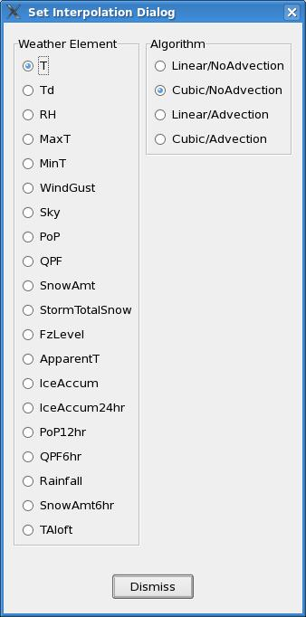
Temporal Editor Statistics Dialog
The temporal editor statistics dialog controls the type of data that is displayed in the Temporal Editor when one of the Range (RangeBar, TEColorRangeBar) visualizations are enabled. An example of the RangeBar visualization is shown below. This particular visualization is showing the moderated 15% minimum, 15% maximum values from an edit area. The max, average, and minimum values are shown.Example of temporal editor range
bar visualization.
The dialog controls the data presented in the temporal editor range visualizations. Absolute will display the absolute minimum and maximum values in the editor. Moderated will chop out the outlyers based on the given percentages for the minimum and maximum. The Standard Deviation choice includes those points within a certain number of standard deviations from the average.

Time Scale Displayed Periods Dialog
The time scale displayed periods dialog is used to specify which of the named selection time ranges are to appear on the Time Scale. The definitions of the selection time ranges, and new named selection time ranges, may be defined through the Save Selection Time Range Dialog.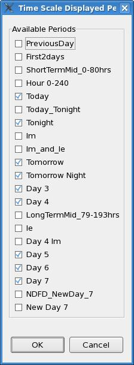
Edit Area Appearance Dialog
The edit area appearance dialog is used to control the color and border line width for the edit area on the spatial editor. The default color and line width may be set in the gfe configuration file entries: ReferenceSet_color and ReferenceSet_width.The user can choose the new color from the color selector as well as the line width.
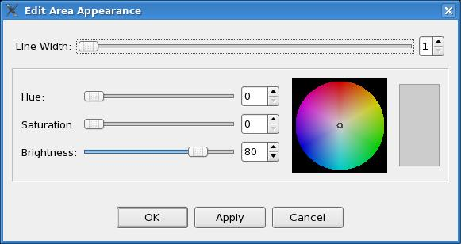
Exit GFE Dialog
If there are unsaved Weather Elements that have been modified, a dialog will appear allowing you to save the modified data.The dialog displays the names of all modified Weather Elements. Choose Yes to save all elements and exit the GFE. Choose No if you do not want to save the elements before exiting the GFE.
At any time you can click Cancel to cancel the operation and close the dialog without exiting the GFE.
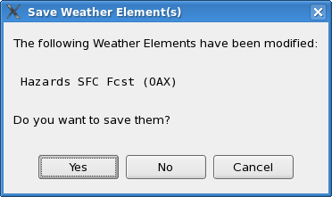
If you happen to have any temporary hazard grids active in your GFE
and attempt to exit, you may see a dialog that looks like this:

If you see this dialog, it means that you must save or manually
unload the temporary hazards weather elements before you can save the
"Hazards" weather element. If you select "No", the GFE will exit
without saving any of your modified grids. If you select "Cancel"
the operation will be canceled and leave the grid state unchanged.
Weather Element Volume Browser Dialog
Opens a dialog that allows you to load and unload Weather Elements in the GFE. You must choose from the following options in order specify which Weather Elements you wish to load/unload:- Type -Grid database types (IFP, D2D). For a list of D2D weather elements and descriptions, click here.
- Source -Grid database sources and times and the official forecast (LAPS, RUC, Fcst, etc.)
- Field -Weather Elements to load
- Plane -The vertical plane of gridded data. "SFC" stands for surface and is the plane of the forecast and official databases.
In each option field listed above, single click on the items you wish to include/exclude. Scroll bars to the right of each field allow you to page through all available selections. Alternately, you can click on the option heading itself to list all available selections.
There are built-in dependencies between the above options moving from left to right. This means that only Sources for the selected Type will appear. Similarly, only the Fields for the selected Sources and Planes for the selected Fields appear. This will aid you in selecting available grids from the many possible combinations.
The File menu allows you to save the selections you have made to a group, delete previously saved groups, or to load a previously created group.
The Edit menu allows you to select/deselect all available options or to start over by undoing the selections you have made thus far.
The Site can be selected from the menu bar.
After making your selections, click Load and Dismiss to load your selections and close the dialog, or click Cancel at any time to end the operation and close the dialog.
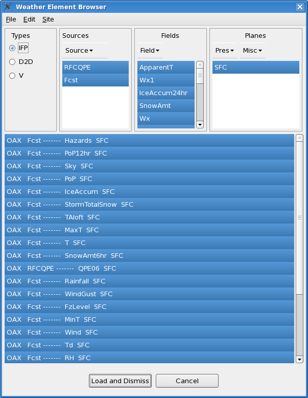- From the main menu bar, press and hold MB1 over the Weather Element menu item.
- Slide the mouse mouse pointer over the Weather Element Groups menu item.
- Select one of the pre-defined groups from the Groups cascade menu.
- From the main menu bar, select WeatherElement->Weather Element Volume Browser.
- Select any group of weather elements.
- From the Weather Element Volume Browser menu bar, select File->Save Weather Element Group.
- The Save Weather Element Group Dialog appears. Enter the group name and select Save.
Working With Groups
While the Weather Element Volume Browser Dialog allows you to load and unload individual weather elements, occasionally it's convenient to load groups of parameters that are related. A Group is a named group of weather elements that you can define.Saving a group of weather elements is done via the Weather Element Volume Browser. To make your own group, follow the steps below.
You can delete saved groups by choosing File-->Delete Weather Element Group which brings up the Delete Weather Element Group Dialog.
Save Weather Element Group Dialog
To save the group of weather elements selected in the Weather Element Volume Browser, type a name in the identifier box and click "Save." You can re-save an existing group by clicking on its name.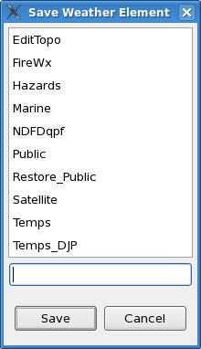
Delete Weather Element Group Dialog
To delete an existing weather element group, click on its name which will appear in the identifier box. Then click "Delete."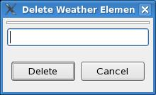
Manage Hidden Weather Elements Dialog
The Manage Hidden Weather Elements Dialog is used to unload and/or make visible hidden weather elements. Hidden weather elements are those weather elements which have been created during smart tool execution or during "Show ISC Mode". The GFE creates temporary weather elements for purposes of holding calculations. Some of these may not get unloaded automatically and since these weather elements are "hidden", i.e., don't appear in the spatial editor or grid manager, the user is not aware of their existance.One example of a hidden weather element is when "Show ISC Mode" is enabled. The GFE will continue to display just the Fcst weather elements and not any ISC elements in the grid manager and spatial editor. The GFE software loads the ISC and any needed virtual ISC elements in order to display the composite grids in the editors. When "Show ISC Mode" is turned off, these hidden elements remain.
The dialog provides a convenient way to view these "hidden" elements or to "unload" them.

Define Procedures Dialog
Procedures are a sequences of commands allowing you to populate the Forecast database from the Model databases that have been created via initialization and to call Smart Tools. (See GFE Smart Tools Training Guide)The Define Procedures Dialog opens the Localization perspective with the Procedures folder selected in the left column.
Choosing MB3-->New allows you to add a new procedure. A dialog will appear for you to enter the name of your new procedure. After clicking Ok, the Python editor will appear for you enter your procedure commands. A template is provided in the Python window with documentation in the Smart Script Class Library and Procedures section of the Smart Tools Training Guide.
NOTE: Procedures can be run in background mode from the command line. For instructions, see the runProcedure documentation.
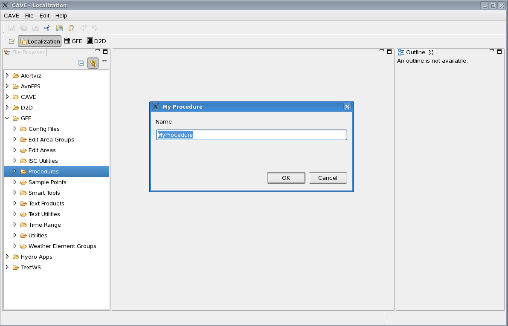
Copy Selected Grids From Dialog
The Copy Selected Grids From dialog allows you to Copy data from a model to one or more selected Forecast Weather Elements within the Selected Time Range of the Grid Manager.The dialog displays the names of all available models and you choose the model you wish to copy from by clicking directly on the model identifier. If necessary, you can use the scroll bar at right to page through all the available models.
After making your selection(s) click OK or click Cancel at any time to cancel the operation and close the dialog.
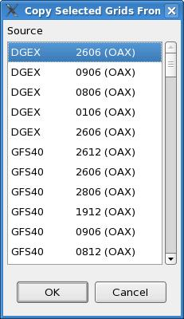
Copy All Grids From Dialog
The Copy All Grids From dialog allows you to Copy all data from a model to one or more Forecast Weather Elements.The dialog displays the names of all available models and you choose the model you wish to copy from by clicking directly on the model identifier. If necessary, you can use the scroll bar at right to page through all the available models.
After making your selection(s) click OK or click Cancel at any time to cancel the operation and close the dialog.
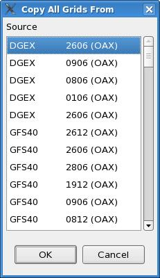
Send Intersite Grids Dialog
The Send Intersite Grids dialog controls the sending of grids to adjacent sites. Sending of grids is either an automatic process when grids are saved (if SEND_ISC_ON_SAVE is set in localConfig), or a manual process accomplished through this dialog. It is not recommended to use both methods. If SEND_ISC_ON_SAVE in serverConfig/localConfig is 0, or disabled, then this dialog must be used to transmit grids. The Send Intersite Grids Dialog has two fields in manual mode, and just one choice for automatic mode. Do not confuse this automatic mode with the SEND_ISC_ON_SAVE.In manual mode, the user chooses the set of weather elements to send, which default to the currently loaded elements in the Fcst database, the time ranges to send, whether it be "All Grids", grids over the "Selected Time", or grids over a specific user-defined time range.
There are several convenient buttons used to select the set of
Weather Elements. By default, the loaded weather elements are selected.
The "Set All" sets all weather elements to on, the "Clear All" sets all
weather elements (and sites) to off, and the Groups button brings up a
menu allowing the forecaster to choose a predefined Weather
Element Group. The "Set Selected" option sets the weather
elements and time range to that currently selected in the GFE Grid
Manager.
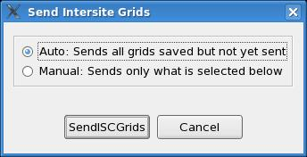
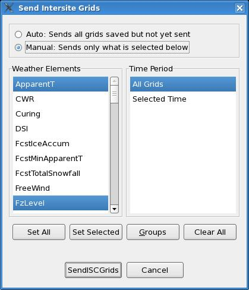
In automatic mode, EDEX keeps track of what ISC grids have been sent since the grids were last modified. When Send ISC is chosen with automatic mode, EDEX sends all grids that were previously modified but haven't yet been sent via ISC.
Request ISC Dialog
The Request ISC Dialog is used normally only when starting up service backup. The purpose of the dialog is to directly request other sites send you their entire set of grids for purposes of populating your ISC database. The normal routing of ISC will slowly fill in your ISC database, but frequently the forecaster needs a quicker initialization.The dialog contains three columns. The first column is the Domain. The user selects which domains that he/she wishes to bring into the ISC database for this one-time request. As the user selects and deselects domains, the entries in the second column, Grid Source, will change. The Grid Source contains information about the "known" EDEX servers that are running the desired domain. The "best" guess selection for each domain is automatically chosen, but may not be the correct choice. For example, if you were down and someone else was backing you up, and then you bring up your system and want your own grids into the ISC database, the default choice would go to the primary site for those grids which is yourself. That won't work -- instead the forecaster must choose the site and server that was used to backup your site.
The information in the second column details the Domain, then the server. The format of the information for the server is the host/port@site where site is the configured mhs id. Don't get confused if the domain is your own, but the site is someone else. This indicates that there is another server on the network that is running your domain. You will frequently see multiple choices whenever a site is preparing for service backup, or recovering from service backup. Simply select one of the choices for each Domain to determine which server to which to make the ISC request.
The third column is the Weather Element list. It contains all of the weather elements you normally receive via ISC. This list defaults to all elements.
Pressing the "Make Request" button will send a request to the chosen EDEX servers, which will process the requests and send you back the specific ISC data in the normal fashion.
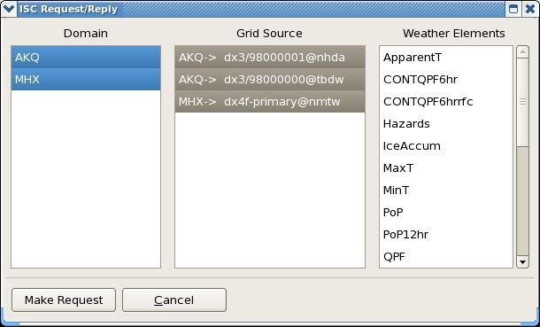
If you are requesting ISC data from a site with a different office
type than your own (such as an RFC requesting data from a WFO), then
the weather element you request will have the remote office type as
part of its name. For example if you are at a WFO and
want to request QPF. Requesting QPF will work from any WFO,
but you must request QPFrfc to request the data from an
RFC. In a similar fashion, if you are at an RFC and want
QPF from another RFC, simply request QPF. But if you want QPF
from an WFO, you must choose QPFwfo.
Interpolate Dialog
The interpolation dialog controls the interpolation for the selected time ranges and weather elements. The user can choose interpolate by gaps, in which all gaps are interpolated, or based on edited data, in which only those grids that been edited will be preserved and all other grids and gaps will be interpolated.The user may choose an interpolation interval in hours. The scale varies from the minimum size of the time constraints for the selected weather elements up to 24 hours. If the user chooses 1, then a grid will be created each hour (or the minimum allowable time for the weather element). If the user chooses 3, then interpolated grids will be created every 3 hours.
The user may choose the duration of the grids in hours. The scale varies from the minimum size of the time constraints for the selected weather elements up to 24 hours. If the user chooses 1, then each interpolated grid will be 1 hour in length (or the minimum allowable time for the weather element). If the user chooses 3, then each interpolated grid will be 3 hours in length if possible.
Note that the "Interpolation Interval In Hours" and the "Duration of Grids in Hours" may not always appear on the dialog, depending upon the time constraint characteristics of the weather elements you have selected. The "Duration of Grids in Hours" will not appear when selecting a weather element in which gaps are permitted, or when weather elements are selected with differing allowable durations. The "Interpolation Interval in Hours" will not appear when multiple weather elements are selected and their repeat interval time constraint are not equal to each other.
The default values of the interpolation interval and duration may be set in the gfe configuration file. See the Interpolation Dialog Defaults section.
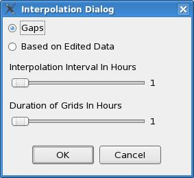
Create From Scratch Dialog
The create from scratch dialog creates new grids for the selected time ranges and weather elements. The user can choose to fill the newly created grids using either the default weather value for the weather element, or the currently assigned pick-up value.The user may choose an creation interval in hours. The scale varies from the minimum size of the time constraints for the selected weather elements up to 24 hours. If the user chooses 1, then a grid will be created each hour (or the minimum allowable time for the weather element). If the user chooses 3, then grids will be created every 3 hours.
The user may choose the duration of the grids in hours. The scale varies from the minimum size of the time constraints for the selected weather elements up to 24 hours. If the user chooses 1, then each created grid will be 1 hour in length (or the minimum allowable time for the weather element). If the user chooses 3, then each created grid will be 3 hours in length if possible.
Note that the "Creation Interval In Hours" and the "Duration of
Grids
in Hours" may not always appear on the dialog, depending upon the time
constraint characteristics of the weather elements you have
selected.
The "Duration of Grids in Hours" will not appear when selecting a
weather
element in which gaps are permitted, or when weather elements are
selected
with differing allowable durations. The "Creation Interval in
Hours"
will not appear when multiple weather elements are selected and their
repeat
interval time constraint are not equal to each other.
Any existing grids within the selected time range will be removed
during this operation.
The default values of the create from scratch interval and duration may be set in the gfe configuration file. See the Create From Scratch Dialog Defaults section.
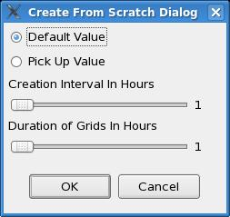
Time Shift Dialog
The Time Shift dialog allows you to move or copy all selected grid blocks forward or backward in time. The dialog offers you the options of copy or move, and the amount of time you wish to shift (in Hours). Depending upon the selected weather elements, the slider may only allow you to select certain time shift values due to the defined time constraints of the elements.After making your selections click OK. At any time you can click Cancel to cancel the operation and close the dialog.
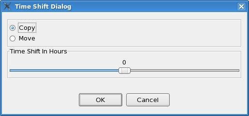
Save Selection Time Range Dialog
- The start/stop times and
- A name (Today, Tonight, Tomorrow, and so forth).
| Current System Time | Start Hour | End Hour | Mode | Calculated Defined Time Range |
| Tuesday 900am, 1500z 6/14 | 0 | 6 | LT | Tuesday midnight to Tuesday 6am local time |
| Tuesday 900am, 1500z 6/14 | 0 | 6 | Zulu | 6/14 0000z to 6/14 0600z |
| Tuesday 900am, 1500z 6/14 | 18 | 49 | LT | Tuesday 6pm to Thursday 1am local time |
| Tuesday 900am, 1500z 6/14 | 18 | 49 | Zulu | 6/14 1800z to 6/16 0100z |
Click "Save" to define the new time range.
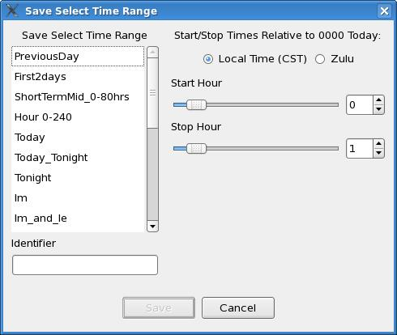
Delete Selection Time Range Dialog
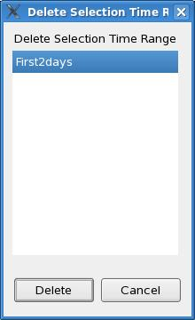
Save Forecast Dialog
The Save Forecast dialog allows you to save the data of modified Forecast Weather Elements.The dialog displays the names of all modified Weather Elements. Choose the Weather Elements you wish to save and click Save Forecast.
The "Send ISC on Save" option can be enabled to also send out your ISC grids for the modified weather elements. See the Intersite Coordination User's Guide for more details on Intersite Coordination of Grids.
At any time you can click Cancel to cancel the operation and close the dialog.
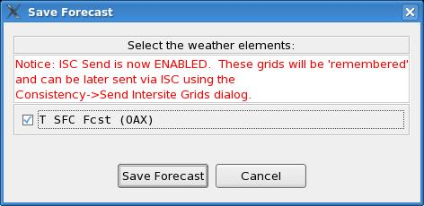
If you are working with Hazards grids, you may encounter a dialog
that looks like this:
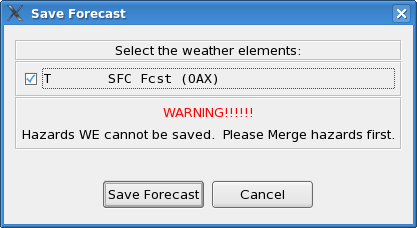
When you see a Save Dialog that looks like this, it means that you
have temporary hazard grids active in the GFE. These temporary
grids must be merged manually before they can be saved. If you
select "Save Weather Element(s) at this point, all of your modified
weather elements will be saved, except "Hazards". To save
"Hazards", you must first select "Hazards->MergeHazards" from the
GFE main menu bar. Selecting "Cancel" will not save any weather
elements and leave the state of the grids just as they were before you
attempted to save.
Revert Forecast Dialog
The Revert Forecast dialog allows you to revert the data of modified Weather Elements. The dialog displays the names of all modified Weather Elements and you choose the Weather Elements you wish to revert to the last saved data. If you Revert the "Hazards" weather element, any temporary hazards weatehr elements will be automatically unloaded in the Grid Manager. To get the temporary elements back, select from the GFE main menu: Hazards->SeparateHazards.At any time you can click Cancel to cancel the operation and close the dialog.
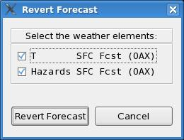
Publish To Official Dialog
The Publish To Official dialog allows you to publish the data of Weather Elements. The dialog displays the names of all Weather Elements for the mutable database (e.g., Fcst), and you choose the Weather Elements you wish to publish.The Time Period entry allows you to select all grids to be published, the selected time range, or just certain defined time periods. The time periods shown are those defined by the GFE->Define Time Ranges menu entry that also appear in the Publish Times Definition part of the gfe configuration file. If a defined time period is chosen (e.g., not All Grids), then any grids that overlap the defined time range will be published.
There are several convenient buttons used to select the set of Weather Elements. By default, the loaded weather elements are selected. The "Set All" sets all weather elements to on, the "Clear All" sets all weather elements (and sites) to off, and the Groups button brings up a menu allowing the forecaster to choose a predefined Weather Element Group. The "Set Selected" button will select those Weather Elements that are selected in the Grid Manager.
After making your selections click Publish or click Cancel at any time to cancel the operation and close the dialog.
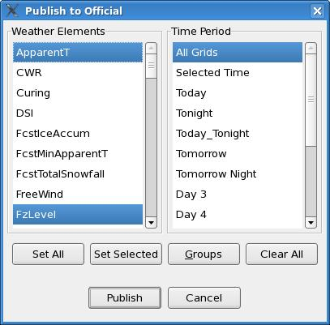
Formatter Launcher Dialog
The Formatter Launcher Dialog is opened from the Products menu. The dialog allows you to generate products using the local formatter infrastructure, define zone combinations, edit the final output product, and view the output log from the formatter. It is highly recommended that you Publish To Official prior to generating products since usually products are generated from the Official Database.Each product you can generate is listed in the dialog. To learn
how to add your own product selections or change the entries currently
in the dialog, refer to the Text
Formatter User's Guide.
By default, product generation will use the Official database for
the data source.
The data source for product generation can be changed to use the Fcst
or the ISC database using the "Data Source" menu. The default
may also be specified in the Definition section of each product
formatter using the Definition['database']
entry.
By default, product generation will run on the EDEX platform,
rather than on the local platform. The forecaster may
change this from the "Processor" menu.
When the "Run" button is pressed, the product will be queued for execution. A dialog will usually be displayed allowing for entry of specific information, such as the issuance time. After the entry dialog is closed, the actual formatter will be queued for execution either on the EDEX platform or local platform. Upon completion, the generated product will be displayed in the dialog. The user can then edit it, save it to a file, store it into AWIPS, or transmit it via AWIPS.
For more details, refer to the Formatter Launcher How-To Guide.
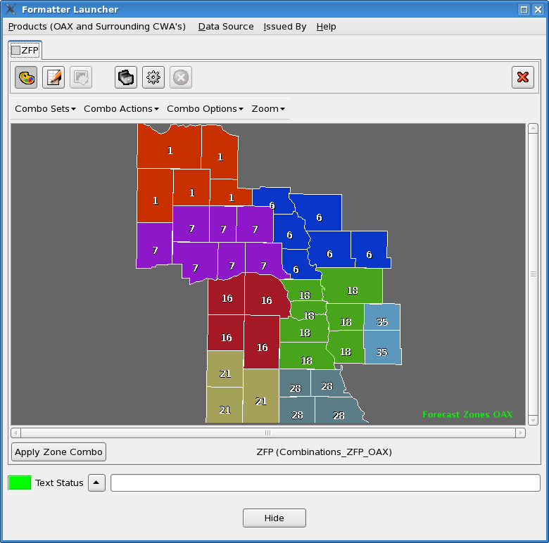
Scripts Dialog
The Scripts dialog is opened from the Products menu. The dialog allows you to generate products and perform other tasks. Each item shown is defined by using an entry in the gfe configuration file. is listed in the dialog. To learn how to add your own product selections or change the entries currently in the dialog, refer to the Product Generation Scripts information for the gfe configuration file.The scripts can be run either locally or on the server machine. Some scripts may run quicker on the server machine since the grids will not be required to flow between the local machine and server machine. However, keep in mind that the directory structure is different on the local and server machines, and thus it may be difficult to "code" up directory names that will work in both cases.
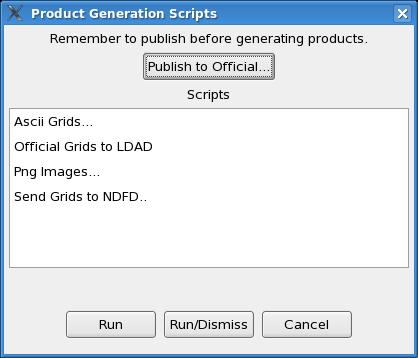
Process Monitor Dialog
The Process Monitor Dialog displays the queue of pending and finished background processes on both the local machine as well as the EDEX machine. As background processes are requested to be run from the Product Generation Scripts and Formatter Launcher Dialogs, the GFE will queue them for execution. This dialog can be used to display and manipulate the queue.The "Local Scripts" section shows the pending, running, and finished processes that were queued locally. Only the processes that were started by the current GFE will be shown. The "Server Scripts" section shows the pending, running, and finished processes that were queued remotely. Processes queued by you, as well as other GFEs, will be shown in this area of the dialog.
The "start" button flashes when the process is running. If the process is still pending, then the button does not flash. Clicking with MB1 will force the process to begin, even if it will exceed the maximum configured number of background processes.
The "kill" button is used to abort or kill a running process, or delete the process from the pending queue if it isn't running yet.
The "terminal" button, when pressed, will open up a window that contains the standard output and standard error information from the process. The terminal only holds a configurable number of lines so processes that produce a lot of output may not have all of their output contained in the dialog. The window may be opened up at any time, while it is pending, running, or finished. Some log messages may not be written to the terminal window unless the .logPref file is correctly configured. The terminal button is only available for server processes after the process has finished.
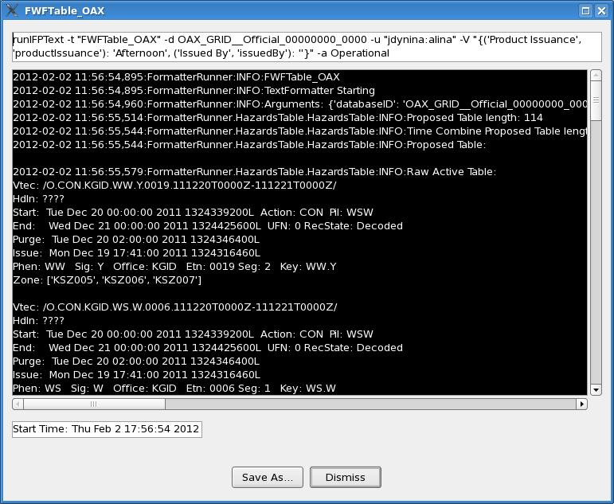
Characteristics of the local processing and dialog can be set through the GFE configuration file process monitor entries. Characteristics of the remote processing (e.g., number of simultaneous processes) can be set through the server's local configuration file.
Define Text Products Dialog
Text Products summarize the digital grid data in tables or simple phrases. For detailed examples and guidelines for creating your own text products, please refer to the GFE Text Product Training Guide.The Define Text Product Dialog is opened by selecting GFE-->Define Text Products.
This opens the Localization perspective with TextProducts folder selected. Within
the Text product folder are all existing text products.
Choosing MB3-->New on the selected TextProducts folder
allows you to add a new product to the list. A
dialog will appear for you to enter the name of your new product and the
product type. After clicking Ok, the Python editor will appear for you
enter your product definition. A template is provided in the Python
window with documentation explaining the definition.

Load Sample Set Dialog
The Load Sample Set Dialog allows you load existing Sample Sets into the GFE Spatial Editor display. To load a Sample Set, click on its name which will highlight it. You may choose more than one Sample Set. To add the chosen Sample Set(s) to those already being displayed, click "Add." To remove the chosen Sample Set(s) from those being displayed, click "Remove." To display only the chosen Sample Set(s) and remove all others from the display, click "Replace."At any time, you can click Cancel to cancel the operation and close the dialog.
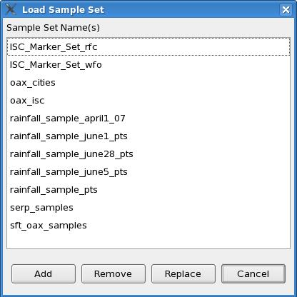
Save Sample Set Dialog
The Save Sample Set dialog allows you to name and save Sample Sets.A sample point can be added to the Spatial Editor when the Sample Tool is active by clicking on a location in the display. To save the set of sample points displayed in the Spatial Editor as a named Sample Set, type a name in the Identifier box and click "Save." You may Cancel the dialog at any time.
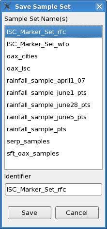
Delete Sample Set Dialog
The Delete Sample Set dialog allows you delete Sample Sets.To delete a saved Sample Set, click on its name which will appear in the Identifier box and click "Delete." You may Cancel the dialog at any time.
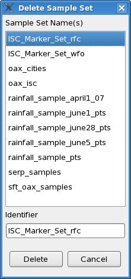
Define Samples via Latitude/Longitude Dialog
The samples may be defined by latitude and longitude. A sample point may be added based on the location in latitude/longitude through this dialog, which is accessed from the main menu Samples entry. The user enters the latitude and the longitude as a decimal number and that point is added to the display. Note that in the Western Hemisphere, the longitudes are negative.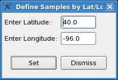
About Dialog
The About Dialog provides general information about CAVE.